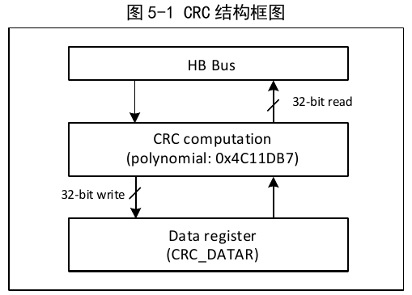

The Cyclic Redundancy Check (CRC) computation unit produces a CRC calculation result for any 32-bit data based on a fixed generator polynomial. It is generally used in data storage and data communication fields to verify data integrity. The hardware CRC computation unit provided by the system can greatly save CPU and RAM resources and improve efficiency.

To start a CRC calculation for a new set of data, the CRC computation unit must be reset. Writing 1 to the RST bit of the control register CRC_CTLR will cause the hardware to reset the data register, restoring the initial value 0xFFFFFFFF.
The CRC unit's calculation result is the CRC of the previous CRC calculation result combined with the newly participating data. For the CRC_DATAR data register, a write operation feeds new data into the hardware computation unit, while a read operation returns the latest CRC calculation value. During hardware computation, write operations to the system are stalled, so new values can be written continuously.
The CRC unit provides an 8-bit independent data register CRC_IDATAR for application code to temporarily store 1 byte of data, which is not affected by CRC unit reset.
| Name | Address | Description | Reset Value |
|---|---|---|---|
| R32_CRC_DATAR | 0x40023000 | Data register | 0xFFFFFFFF |
| R8_CRC_IDATAR | 0x40023004 | Independent data buffer | 0x00 |
| R32_CRC_CTLR | 0x40023008 | Control register | 0x00000000 |
Offset address: 0x00
| 31 | 30 | 29 | 28 | 27 | 26 | 25 | 24 | 23 | 22 | 21 | 20 | 19 | 18 | 17 | 16 |
| DR[31:16] | |||||||||||||||
| 15 | 14 | 13 | 12 | 11 | 10 | 9 | 8 | 7 | 6 | 5 | 4 | 3 | 2 | 1 | 0 |
| DR[15:0] | |||||||||||||||
| Bits | Name | Access | Description | Reset |
|---|---|---|---|---|
| [31:0] | DR[31:0] | RW | Write raw data; read the calculation result. | 0xFFFFFFFF |
Offset address: 0x04
| 15 | 14 | 13 | 12 | 11 | 10 | 9 | 8 | 7 | 6 | 5 | 4 | 3 | 2 | 1 | 0 |
| Reserved | IDR[7:0] | ||||||||||||||
| Bits | Name | Access | Description | Reset |
|---|---|---|---|---|
| [7:0] | IDR[7:0] | RW | 8-bit general-purpose register that can be used as a data buffer. This register is not affected by the RST bit of the control register. | 0 |
Offset address: 0x08
| 31 | 30 | 29 | 28 | 27 | 26 | 25 | 24 | 23 | 22 | 21 | 20 | 19 | 18 | 17 | 16 |
| Reserved | |||||||||||||||
| 15 | 14 | 13 | 12 | 11 | 10 | 9 | 8 | 7 | 6 | 5 | 4 | 3 | 2 | 1 | 0 |
| Reserved | RST | ||||||||||||||
| Bits | Name | Access | Description | Reset |
|---|---|---|---|---|
| [31:1] | Reserved | RO | Reserved. | 0 |
| 0 | RST | WO | CRC computation unit reset control. Writing 1 triggers the reset; the hardware automatically clears this bit. After execution, the data register becomes 0xFFFFFFFF. | 0 |